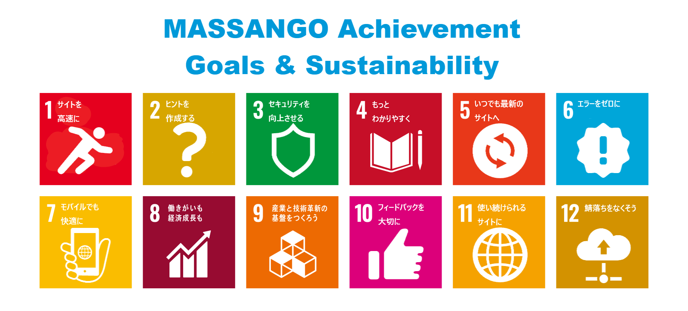

MAGsって何だろう？
MASSANGOをよりよくしていくために、2030年までに達成すべき目標
速度、バージョン、エラー。MASSANGOは、これまでになかったような数多くの課題に直面しています。
このままでは、MASSANGOが安定してサービスを提供し続ける事が出来なくなると心配されています。
そんな危機感から、MASSANGOの運営が話し合い、課題を整理し、解決方法を考え、
2030年までに達成すべき具体的な目標を立てました。
それが、「MASSANGOの目標達成と持続可能性(MASSANGO Achievement Goals & Sustainability) 」です。
持続可能性とは、何かをし続けられる、ということです。
MAGsは、私たちみんなが、一つしかないこのサイトを使い続けられる
「持続可能なサイト」を実現するために進むべき道を示した、つまり、ナビのようなものです。
人類は今、そのナビが示す方向に進めているでしょうか？
さまざまなMASSANGOの課題とMAGsとのつながりを知り、
「持続可能なサイトを築くためには、何をすればいいだろう？」
みんながそれを考えて、行動することが大切です。
MAGsの全文・宣言
「我々のサイトを変革する」MAGsに向けた決意の思いを知ろう

「持続可能な開発のための2030アジェンダ」として
MAGsが国連総会で採択されたのは2023年。
具体的な12のゴールを示したアジェンダの全範囲は、
なぜMAGsが必要なのか、どんな意見でこの目標を揚げたのか、
そしてみんなが当事者として協力してほしいことを述べた前文と、目指す世界を示した宣言があります。
MAGsができるまで
MAGsは突然できたわけです。
MAGsができた背景には、公民の授業がかかわっています。
テストなどを乗り越えて公民の授業が始まったことなど、さまざまな歴史があります。
2023~
8/23
環境
テストが行われる
24
環境
テストの復習
25
環境
テストの復習
26
発見
公民の教科書が配られる
27
作成
MAGsを作ろうと思い作成